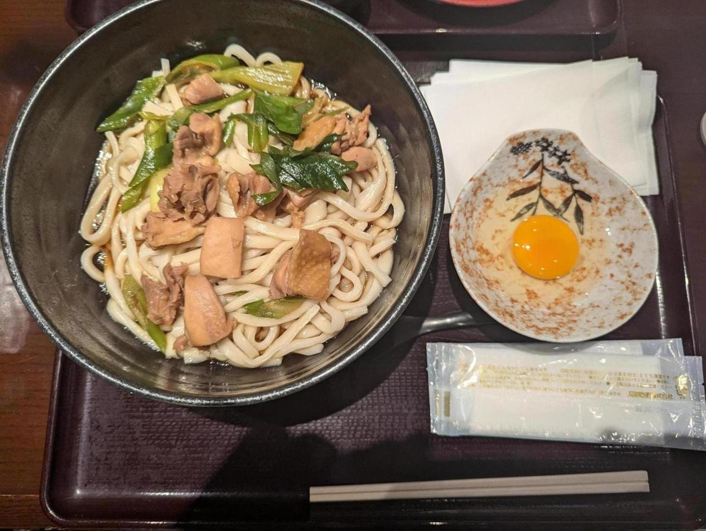

<- 日記

羽生パーキングエリア（上り）で食べたうどん。
羽生パーキングエリア（上り）は、建物の外装や内装が江戸時代みたいになっていることで有名な施設だ。初めて行ったけどけっこう面白かった。一度行けばいい感はある。
都内の方は渋滞がひどすぎてだめだな。最近、前は好きでよく行ってたけど、もうここは来たくなくなってしまった、という場所が増えてきた。30代になってからこういう、過去の価値観が大きく変化することが多い。